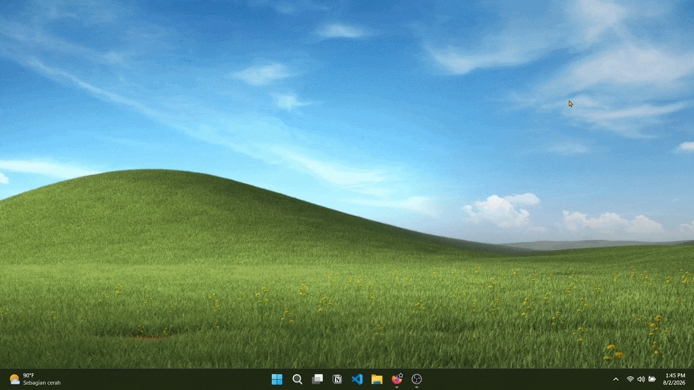
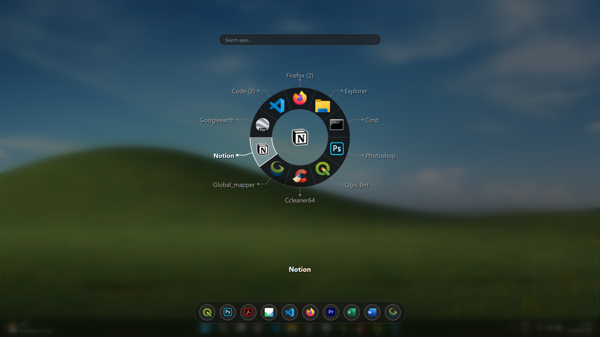
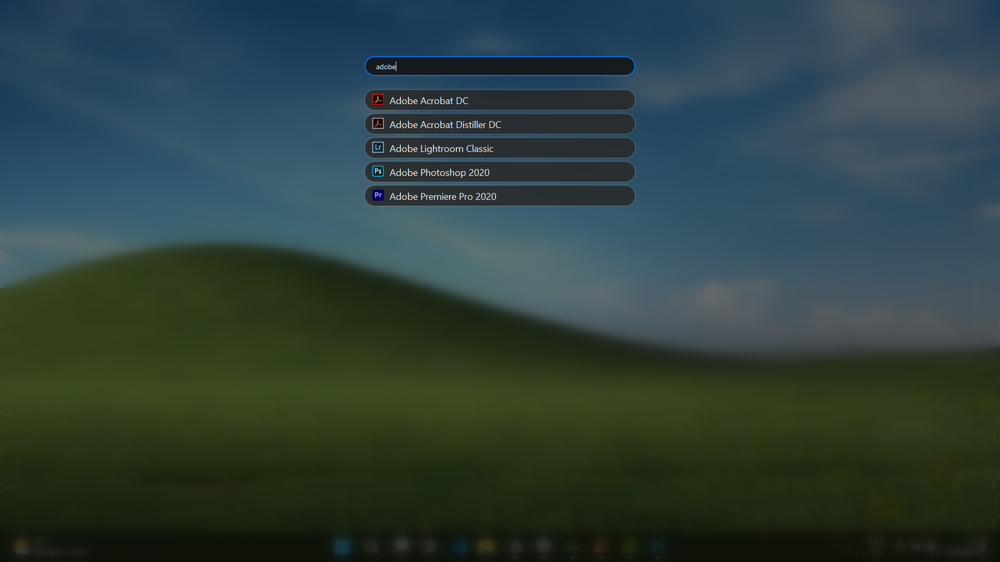
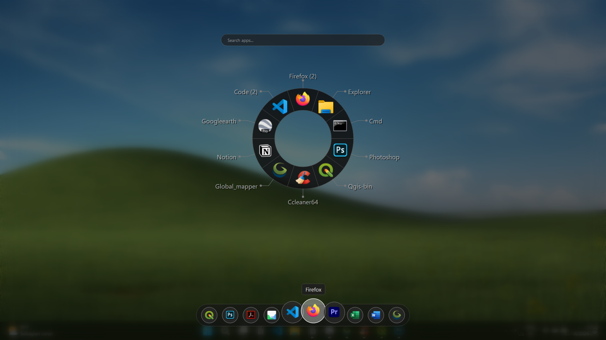

Select by direction and typing.
Every application lives in a consistent position, allowing your muscle memory to take over. When start typing, Orbit also instantly filter applications on the wheel, helping you find what you need in seconds.
A radial application launcher inspired by modern game interfaces.
✓ One-time purchase • Lifetime updates • 30-day money-back guarantee

Modern games solved fast selection years ago. Whether you're switching weapons in modern games, navigating inventories in RPGs, or selecting abilities in competitive games, everything relies on spatial memory instead of searching through menus.

Weapon wheels let players select items in a fraction of a second because they remember positions.
Windows still asks you to scan rows of windows every time you press Alt + Tab. Orbit brings the same radial interaction used in games to your desktop, making application switching feel natural and fast.

Every application lives in a consistent position, allowing your muscle memory to take over. When start typing, Orbit also instantly filter applications on the wheel, helping you find what you need in seconds.

Press Tab to switch to searching bar and start typing. Orbit instantly search installed applications on Windows, helping you find what you need in seconds.

Pin frequently used applications to the dock for quick access while keeping your Windows taskbar clean.
Orbit is designed to be fully usable with both your mouse and keyboard.
| Action | Result |
|---|---|
| Alt + Q | Open Orbit around your cursor. |
| Mouse + Click | Launch the selected application or open its submenu. |
| Type | Instantly filter applications on the wheel. |
| Tab | Switch focus between the Wheel, Quick Dock, and Search. |
| ← → | Move the current selection around the wheel. |
| Enter | Launch the selected application or open its submenu. |
| ↑ ↓ | Navigate through submenu items. |
| Esc | Close Orbit. |
One payment. No subscriptions. Own Orbit forever.
Pay once, use it forever.
Secure checkout powered by Lemon Squeezy.
30-day money-back guarantee
Buying Orbit takes less than a minute.
Complete the secure checkout.
Receive your download instructions and license key by email.
Activate Orbit and enjoy lifetime updates.
Orbit supports Windows 10 and Windows 11 (64-bit).
Internet is only required for purchase and activation. Orbit works offline afterward.
After payment you'll receive download instructions and your license by email.
Yes. You may reinstall Orbit on your licensed devices at any time.
Each personal license may be activated on up to two Windows devices owned by you.
Yes. All future updates are included at no additional cost.
Yes. Refunds are available within 30 days of purchase if this application can't work on your computer.